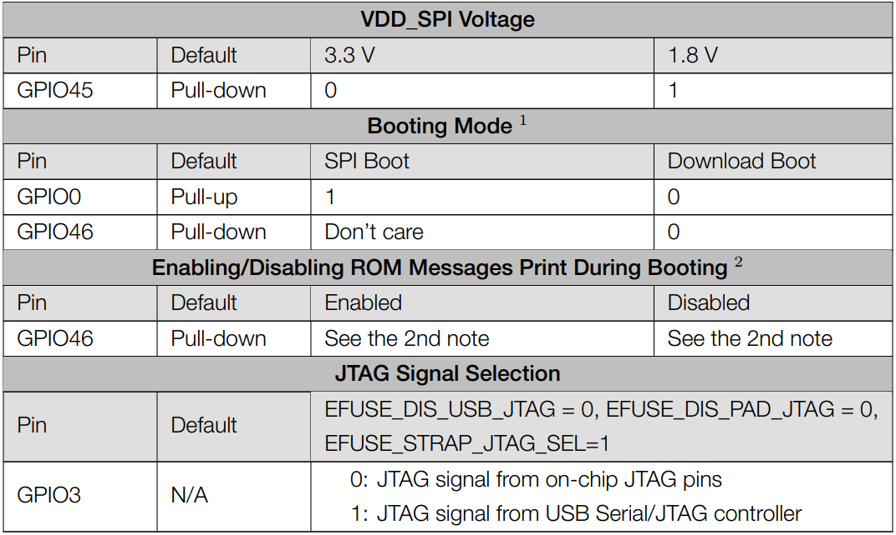
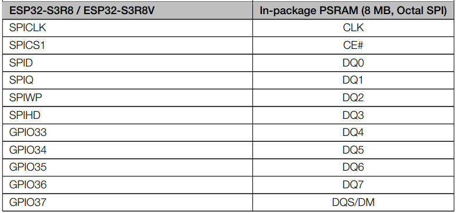
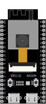

Notes for GPIO
Strapping Pin
There are four Strapping pins for ESP32-S3：GPIO0、GPIO45、GPIO46、GPIO3。 With the release of the chip’s system reset (power-on reset, RTC watchdog reset, undervoltage reset), the strapping pins sample the level and store it in the latch as “0” or “1” “, and keep it until the chip is powered off or turned off. Each Strapping pin is connecting to internal pull-up/pull-down. Connecting to high-impedance external circuit or without an external connection, a strapping pin’s default value of input level will be determined by internal weak pull-up/pull-down. To change the value of the Strapping, users can apply an external pulldown/pull-up resistor, or use the GPIO of the host MCU to control the level of the strapping pin when the ESP32-S3’s power on reset is released.
When releasing the reset, the strapping pin has the same function as a normal pin. The followings are default configurations of these four strapping pins at power-on and their functions under the corresponding configuration.
Note
1.The strapping combination of setting GPIO46 to 1 and GPIO0 to 0 is invalid and may trigger unexpected behavior. 2.By default, the ROM boot messages are printed over UART0 (UOTXD pin) and the USB Serial/JTAG controller together. The ROM code printing can be disabled through the configuration register and eFuse. For detailed information, please refer to the ‘Chip Boot Control’ chapter in the ESP32-S3 Technical Reference Manual.
If you have any difficulties or questions with this tutorial or toolkit, feel free to ask for our quick and free technical support through tech_edu_service@outlook.com at any time. or check: https://www.espressif.com/sites/default/files/documentation/RaspberryPiPicoW-1_wroom1u_datasheet_en.pdf
PSRAM Pin
The module on the Raspberry Pi Pico W board uses the ESP32-S3R8 chip with 8MB of external Flash. When we use the OPI PSRAM, please note that the GPIO35-GPIO37 on the Raspberry Pi Pico W board will not be available for other purposes. When OPI PSRAM is not used, GPIO35-GPIO37 on the board can be used as normal GPIO.
SDcard Pin An SDcard slot is integrated on the back of the Raspberry Pi Pico W board. We can use GPIO38-GPIO40 of Raspberry Pi Pico W to drive SD card. The SDcard of Raspberry Pi Pico W uses SDMMC, a 1-bit bus driving method, which has been integrated in the Arduino IDE, and we can call the “SD_MMC.h” library to drive it. For details, see the SDcard chapter in this tutorial.
USB Pin In Micropython, GPIO19 and GPIO20 are used for the USB function of ESP32S3, so they cannot be used as other functions!
Cam Pin When using the camera of our ESP32-S3 WROOM, please check the pins of it. Pins with underlined numbers are used by the camera function, if you want to use other functions besides it, please avoid using them.
CAM_Pin |
GPIO_pin |
|---|---|
SIOD |
GPIO4 |
SIOC |
GPIO5 |
CSI_VYSNC |
GPIO6 |
CSI_HREF |
GPIO7 |
CSI_Y9 |
GPIO16 |
XCLK |
GPIO15 |
CSI_Y8 |
GPIO17 |
CSI_Y7 |
GPIO18 |
CSI_PCLK |
GPIO13 |
CSI_Y6 |
GPIO12 |
CSI_Y2 |
GPIO11 |
CSI_Y5 |
GPIO10 |
CSI_Y3 |
GPIO9 |
CSI_Y4 |
GPIO8 |
If you have any questions about the information of GPIO, you can click here to go back to ESP32-S3 WROOM to view specific information about GPIO. or check: https://www.espressif.com/sites/default/files/documentation/esp32-s3_datasheet_en.pdf